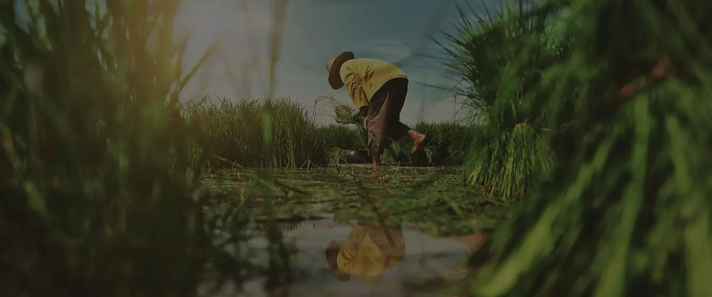
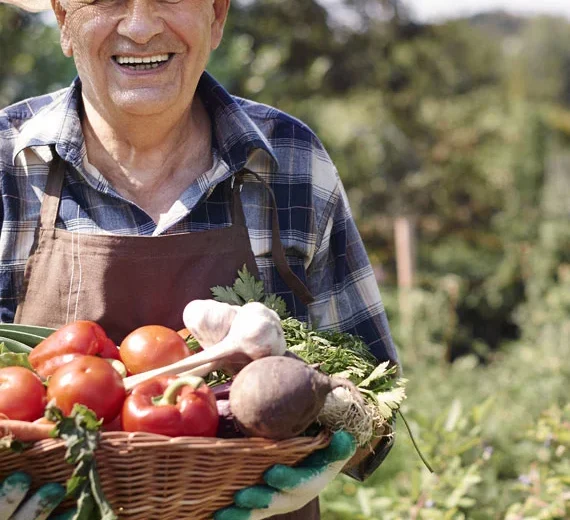

01 · Source
Selected origins
We work with products and partners that meet your market’s expectations.
Egypt · Export ready · Since 2002
Traceable Egyptian produce and food products for international buyers who value clarity, care and dependable delivery.
Explore products →
From Egyptian soil
Our story
Since 2002, Safe Food Egypt has built relationships across farms, packing operations and global markets. We pair Egyptian abundance with an export process buyers can trust.
Meet Safe Food →Find your category
01 · Source
We work with products and partners that meet your market’s expectations.
02 · Prepare
Packing and paperwork shaped around your order and destination.
03 · Deliver
Support from first conversation through your shipment’s next step.